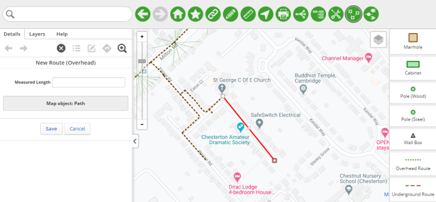

A route defines the path between two structures. Your Administrator can configure your application to support different types of routes, for example overhead routes and trenches.
To add a route:
Click the Add Object icon, and then select the type of route that you would like to create, for example Route (Underground).
On the map, draw the path of the route. Vertices will automatically snap to existing routes and structures.

Figure: Example route
Notes:
While drawing the path, you can make the following adjustments: